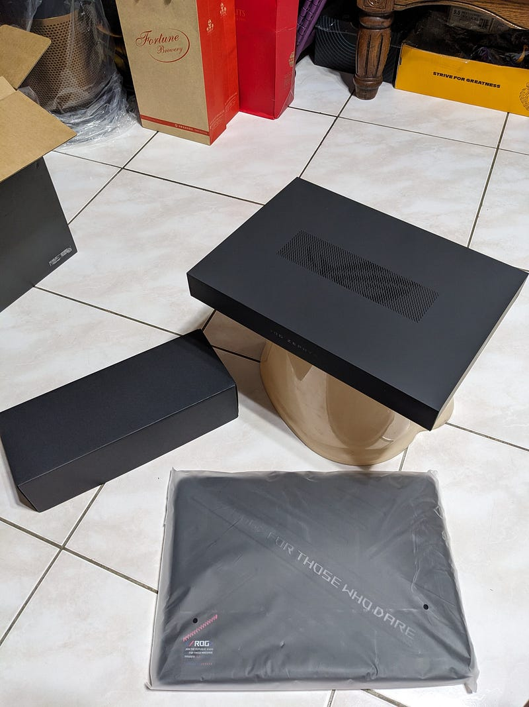
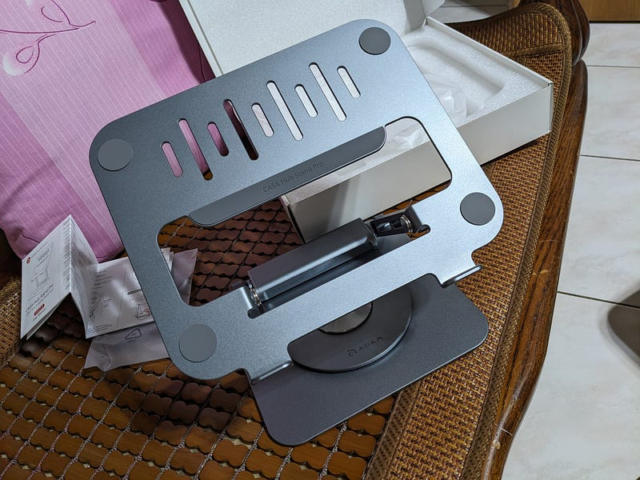
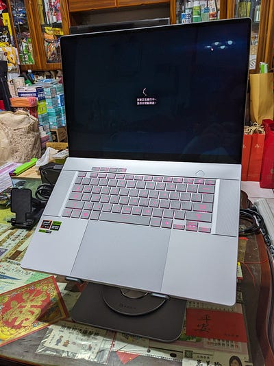
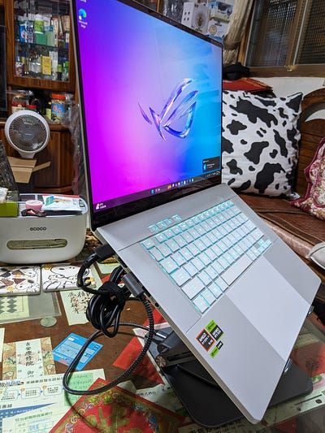
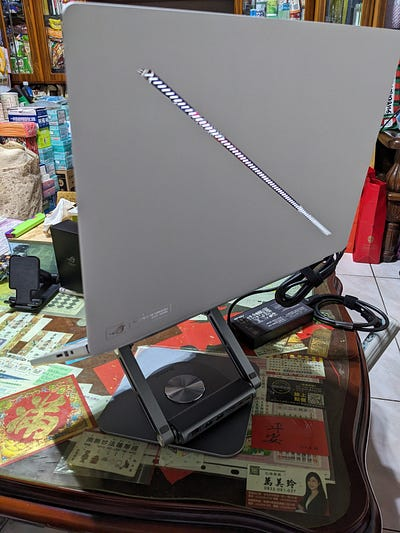

有鑑於這台跟前幾個月出的Intel版外觀極度相似，已經有很多很讚的開箱文了，再加上我實在沒有像樣的地方可以開箱，因此就只求個搶頭香。
前方極度不專業開箱警告
這台主要的賣點就是處理器是AMD Ryzen™ AI 9 HX 370，雖然沒有很懂，但是不明覺厲，開賣前幾天官網還沒有顯示價格的時候有先去三創ROG店碰碰運氣，沒想到可以先訂購，只是價格不知道，到貨時間也不知道，只有先付1000元訂金。
結果隔幾天官網開放預購後，當天下午就接到電話說可以去拿了，因此隔天就火速去拿。
開賣前幾天官網還沒有顯示價格的時候有先去三創ROG店碰碰運氣，沒想到可以先訂購，只是價格不知道，到貨時間也不知道，只有先付1000元訂金。
結果隔幾天官網開放預購後，當天下午就接到電話說可以去拿了，因此隔天就火速去拿。
其實在店裡面店員就整個開箱跟基本開機過了，紙箱打開後又分三個東西，分別是左手邊的變壓器&滑鼠，下面的包包，跟電腦本體。

雖然說是金屬色，但是乍看之下會有種是白色的錯覺
在給他跑更新之餘，這邊就得拿出下一個東西了，也就是支架，因為這種輕薄本終究散熱還是需要在意的點。
買的是亞果的貴鬆鬆的支架，說實在也沒有甚麼特別的原因，主要就是有設計感，好看。

一個值得注意的點是，轉軸有夠緊，因為要承受電腦的重量，只是怕一不小心太大力把它折壞了。



好用的地方在於下面也有旋轉軸，這樣就可以比較方便的去插孔了。只是雖然他緊是緊，但是還是不至於打字的時候如履平地，基本上還是會晃動，所以架起來的時候應該還是要配個鍵盤滑鼠之類的。